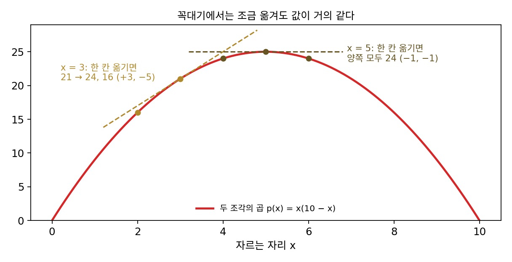
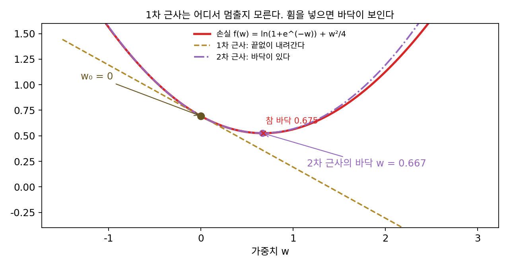

2차 근사: 휨을 넣으면 바닥이 보인다
1차 근사는 지금 자리에서 그은 직선이다. 직선은 기울기가 음수이면 어디까지 가든 계속 내려간다고 말한다. 그래서 1차 근사는 어느 쪽으로 갈지는 알려 주지만 어디서 멈출지는 알려 주지 않는다. 바닥 근처에서는 더 곤란하다. 바닥에서는 기울기가 0이라 1차 근사가 「어디로 가도 같다」고 말한다. 기울기와 수직인 걸음도 마찬가지다. 함수 x²y의 점 (1, 2)에서 기울기 (4, 1)과 수직인 걸음 (0.1, −0.4)를 가면 1차 근사는 변화 0을 예측하지만, 실제 값은 0.064만큼 줄었다. 한 점에서 잰 숫자로 바닥이 어디 있는지까지 내다보려면 무엇을 더 재야 할까?
역사: 페르마의 「거의 같다」와 매클로린의 판정
가장 크거나 가장 작은 곳을 찾는 일을 처음 계산의 규칙으로 바꾼 사람은 프랑스의 피에르 드 페르마(Pierre de Fermat)다. 그는 1636년 무렵 프랑스의 수학자들 사이에 돌던 라틴어 글 「극대와 극소를 찾는 방법(Methodus ad disquirendam maximam et minimam)」에서 길이 b인 선분을 둘로 나눠 두 조각의 곱 bx − x²을 가장 크게 하는 문제를 예로 들었다. 그의 생각은 극대인 자리에서는 조금 옮겨도 값이 거의 같다는 것이었다. 그래서 x에서의 값과 x + e에서의 값을 「거의 같다」고 놓고, 양쪽에서 같은 항을 지우고 e로 나눈 뒤 남은 e가 붙은 항을 버렸다. 그러면 b = 2x, 곧 한가운데에서 자르면 된다는 답이 나온다.
지금 말로 하면 페르마는 값의 변화에서 e에 비례하는 항, 곧 1차 항이 사라지는 자리를 찾았다. b = 10으로 숫자를 넣어 보자. x = 3에서 0.1만큼 옮기면 곱이 +0.39, 반대로 옮기면 −0.41만큼 변해 양쪽의 부호가 다르다. 1차 항이 살아 있다는 표시다. x = 5에서는 양쪽 모두 −0.01이다. 1차 항이 사라지고 e²에 비례하는 항만 남았는데, 그 항의 부호가 음수라 어느 쪽으로 옮겨도 값이 준다. 그래서 x = 5는 꼭대기다.

페르마의 방법은 평평한 자리를 찾지만, 그 자리가 꼭대기인지 바닥인지는 따로 따져야 한다. 1차 항이 사라진 뒤 남는 다음 항의 부호를 보면 된다. 스코틀랜드의 콜린 매클로린(Colin Maclaurin)은 열아홉 살에 애버딘의 머리셜 칼리지 교수가 된 수학자다. 그가 1742년에 펴낸 두 권짜리 『유율론(A Treatise of Fluxions)』은 미적분의 논리가 엉성하다는 조지 버클리의 비판에 답하려고 뉴턴의 방법을 체계적으로 정리한 책인데, 극대와 극소를 가르는 일반적인 이론을 처음으로 바르게 세운 책으로 평가받는다.
가중치 하나짜리 로지스틱 회귀의 바닥
바닥을 내다보는 일을 시험하려면 바닥이 하나 있고 그 자리를 따로 확인할 수 있는 손실이 좋다. 정답이 1이고 입력이 1인 표본 하나에 로지스틱 손실을 쓰고, 가중치 감쇠(가중치가 커질수록 벌점을 주는 항, 세기 0.5)를 붙인 손실 f(w) = ln(1 + e^(−w)) + w²/4가 그렇다. ML에서 가장 흔한 분류 손실에 가장 흔한 벌점을 붙인 꼴인데, 바닥의 자리를 식으로 풀 수는 없다. 미분해서 0이 되는 곳을 찾으면 σ(−w) = w/2라는 방정식이 나오는데(σ(시그마)는 시그모이드 함수 1/(1 + e^(−z))), 이 방정식은 손으로 풀리지 않는다. 컴퓨터로 끝까지 풀면 바닥은 w* = 0.6748, 그 자리의 손실은 0.5255다. 그 답을 모르는 척하고 w₀ = 0에서 내다보자.
출발점의 값은 f(0) = ln 2 = 0.6931, 기울기는 f′(0) = −0.5다. 1차 근사 0.6931 − 0.5h는 h를 키울수록 끝없이 내려가서 h = 1에서 0.193, h = 4에서는 −1.307이라고 말한다. 손실은 음수가 될 수 없는데도 그렇다. 여기에 기울기가 바뀌는 빠르기, 곧 2차 미분 f″(0) = 0.75를 넣자. 기울기가 걸음마다 0.75씩 커지면 기울기는 h = 0.5/0.75 = 0.667에서 0이 되고, 손실의 변화는 f′(0)h + ½f″(0)h²라는 포물선이 된다. 이 포물선의 꼭짓점이 h = 0.6667이고, 그 자리의 예측값은 0.5265, 실제 손실은 0.5255다. 한 점에서 잰 숫자 셋으로 참 바닥 0.6748에서 0.008 떨어진 곳을 짚었다.
| 걸음 h | 참값 f(h) | 1차 근사의 오차 | 2차 근사의 오차 |
|---|---|---|---|
| 0.1 | 0.646897 | 0.003749 | 0.000001 |
| 0.5 | 0.536577 | 0.093430 | 0.000320 |
| 1 | 0.563262 | 0.370115 | 0.004885 |
| 2 | 1.126928 | 1.433781 | 0.066219 |
값과 기울기에 휜 정도까지 넣어 떨어진 곳을 포물선으로 예측하는 것을 2차 근사 (휨까지 넣어 내다보기 / second-order approximation)라 한다. 이 책에서 곡률이라고 하면 이 2차 미분의 크기, 곧 손실이 얼마나 휘었는지를 가리킨다. 1차 근사의 오차가 h²에 비례했듯이 2차 근사의 오차는 h³에 비례하는 것이 보통이다. ln(1 + x)라면 2차 근사 h − h²/2의 오차가 h = 0.1에서 0.000310으로 h³/3 = 0.000333에 가깝다. 장난감 손실은 3차 미분이 출발점에서 0이라 오차가 더 빨리 준다.
½이 붙는 까닭은 포물선 ½f″(a)h²을 두 번 미분했을 때 f″(a)가 나와야 하기 때문이다. 이 포물선은 f″(a) > 0이면 위로 열려 있고, 꼭짓점은 h = −f′(a)/f″(a)에 있다.
매개변수가 d개면 2차 미분도 쌍마다 하나씩 생긴다. 매개변수 i와 j로 한 번씩 미분한 값을 i행 j열에 놓은 d × d 행렬을 헤시안(Hessian, 독일 수학자 루트비히 오토 헤세의 이름에서 왔고 헤세 행렬이라고도 한다)이라 부르고 H로 적는다. 다차원의 2차 근사는 다음과 같다.

ML에서: 뉴턴 걸음은 2차 근사의 바닥으로 뛴다
2차 근사의 꼭짓점으로 옮긴 뒤 그 자리에서 다시 2차 근사를 세우고 또 꼭짓점으로 옮기는 일을 되풀이하는 방법을 뉴턴법이라 부른다. 다차원에서는 2차 근사의 바닥 Δθ = −H⁻¹∇𝓛로 옮긴다. 장난감 손실에서 w₀ = 0에서 시작하면 w는 0.666667, 0.674828, 0.6748316143으로 가고, 바닥까지 거리는 8.2 × 10⁻³, 3.3 × 10⁻⁶, 5.6 × 10⁻¹³으로 준다. 걸음마다 맞는 자릿수가 두 배씩 늘어나는 셈이다. 같은 출발점에서 학습률 1의 경사하강은 0.5, 0.6275, 0.6618, …로 가서 바닥까지 거리가 10⁻⁶ 안에 들기까지 11걸음이 걸린다.
곡률을 아는 값은 크다. 그 대신 매개변수가 d개면 헤시안은 숫자 d²개짜리 행렬이고, 걸음마다 그 행렬로 연립방정식을 풀어야 한다. 헤시안을 구하고 연립방정식을 푸는 계산이 얼마나 비싼지는 최적화 방법의 차수를 비교할 때 숫자로 본다. 그리고 로지스틱 손실의 곡률 σ(w)σ(−w)는 모델이 정답일 확률 p로 쓰면 p(1 − p), 곧 모델이 뽑는 라벨이 흔들리는 정도(분산)다. 손실의 곡률이 모델의 흔들림과 같다는 이 관계는 분류 신경망 전체로 넓혀진다.
문제 4. 72의 법칙
「돈이 두 배가 되는 햇수는 72 ÷ 연이율(%)」이라는 어림이 있다. 연이율 r로 복리를 받으면 두 배가 되는 정확한 햇수는 ln 2 / ln(1 + r)이다. (가) 연 6%일 때 정확한 햇수와 72의 법칙의 어림을 견줘라. (나) ln(1 + r)을 1차 근사 r로 바꾸면 햇수는 몇이 되는가? 이 어림은 정확한 값보다 큰가, 작은가? (다) 1차 근사에서 나오는 숫자는 72가 아니다. 72를 쓰는 까닭을 2차 근사로 설명하라.

6%면 72 ÷ 6 = 12년이에요. 계산기로 ln 2 / ln 1.06을 하면 11.90년이니까 잘 맞네요. 72는 2, 3, 4, 6, 8, 9, 12로 다 나눠지니까 암산하기 좋아서 고른 숫자 아닐까요?

(나)를 해 보자. ln(1 + r) ≈ r로 바꾸면 햇수는 ln 2 / r = 0.693 / r이야. 퍼센트로 쓰면 69.3 ÷ (r%)니까 6%에서 11.55년. 이건 정확한 값보다 작아. ln(1 + r)은 r보다 늘 작은데 그걸 r로 키워서 나눴으니까.

1차 근사로는 69.3이 나왔어요. 그럼 72는 어디서 왔을까요? 1차 근사가 무엇을 버렸는지 떠올려 보세요.

2차 항이요. ln(1 + r) ≈ r − r²/2를 쓰면 햇수가 0.693 / (r(1 − r/2))이 되는데, 1/(1 − r/2)는 대략 1 + r/2니까 69.3 × (1 + r/2) ÷ (r%)예요. r = 8%면 69.3 × 1.04 = 72.1이에요.

2차까지 넣은 식으로 6%를 계산하면 11.91년이라 정확한 11.90년과 거의 같아요. 72는 2차 항을 8% 근처에서 한 번에 넣어 둔 숫자였네요. 그런데 24%에 넣어 보면 정확히는 3.22년인데 72의 법칙은 3.00년이에요. 많이 틀려요.

24%에서 왜 틀릴까요? 72가 어느 이율에 맞춰져 있었는지 보세요.

72는 r = 8% 근처에서 2차 항을 맞춘 숫자라서, 이율이 크면 맞춘 자리에서 멀어지고 3차 항도 커져요. 민준이 말한 나눠지기 좋은 숫자라는 것도 맞지만, 69가 아니라 72 근처인 까닭은 2차 항이에요.

조교님이 「반올림하면 대충 70점」이라고 하셨는데 실제로는 72점이었던 적이 있어요. 대충의 숫자에도 다 까닭이 있었네요.
문제 5. 2차 근사의 꼭짓점이 꼭대기일 때
이중 우물 f(x) = x⁴/4 − x²/2은 x = ±1에 바닥이 있고 x = 0에 꼭대기가 있다. 한 걸음에 2차 근사의 꼭짓점 −f′(x)/f″(x)만큼 옮긴다. (가) x₀ = 1.5와 x₀ = 0.8에서 한 걸음 옮긴 자리는? (나) x₀ = 0.3에서 한 걸음 옮기면 손실은 어떻게 되는가? 이 걸음을 다섯 번 되풀이하면 어디로 가는가? (다) 2차 근사의 꼭짓점으로 옮기는 걸음이 바닥 쪽으로 가려면 어떤 조건이 필요한가? (풀어 본 뒤 위젯 1의 「문제 5 불러오기」로 확인해 보자.)
뉴턴 걸음은 장난감 손실에서 세 걸음 만에 바닥을 찾았잖아요. (가)는 1.5에서 1.1739로, 0.8에서 1.1130으로 가요. 둘 다 바닥 1 쪽으로 가요.
(나)도 계산해 볼까요?

f′(0.3) = −0.273, f″(0.3) = −0.73이라서 걸음이 −0.374예요. x가 −0.0740이 되고, 손실은 −0.0430에서 −0.0027로 커졌어요. 되풀이하면 0.000823, 그다음은 0이에요. 꼭대기에 멈췄어요!

f″(0.3)이 음수야. 2차 근사가 아래로 열린 포물선이라서 꼭짓점이 바닥이 아니라 꼭대기인 거지. 그 꼭대기로 뛴 거야.

그래요. 이 걸음이 실제로 하는 일은 「2차 근사의 기울기가 0인 곳」으로 가는 거예요. 바닥이 될지 꼭대기가 될지는 무엇이 정하죠?
곡률의 부호요. f″(x) = 3x² − 1이 양수인 곳, 곧 |x| > 1/√3 = 0.5774에서만 꼭짓점이 바닥이에요. 페르마의 방법이 평평한 자리를 찾고 매클로린이 그 자리를 다시 따져야 했던 것과 같은 일이네요. 기울기 0만 보면 바닥과 꼭대기를 구별하지 못해요.
같은 0.3에서 학습률 0.5의 경사하강을 돌리면 0.4365, 0.6132, 0.8045, 0.9464, 0.9958로 바닥에 다가가요. 느리지만 내리막으로만 가니까 꼭대기로 가지는 않네요.

길 찾기 앱에 「가장 가까운 평평한 곳」으로 가 달라고 했더니 산꼭대기 공터로 안내한 셈이에요. 평평하다는 것만으로는 내려간 곳인지 올라간 곳인지 모르니까요.
문제 6. 어떤 가중치를 지울까
학습을 마친 신경망에서 가중치 일부를 지워 모델을 줄이는 일을 가지치기라 한다. 입력이 5개, 표본이 500개인 로지스틱 회귀(가중치 감쇠 0.01, 씨앗 고정)를 바닥까지 학습했더니 기울기의 크기가 10⁻¹⁷이 되었다. 학습된 가중치 wᵢ와 헤시안의 대각 성분 Hᵢᵢ(손실을 wᵢ로 두 번 미분한 값)는 다음과 같다. 입력마다 크기가 달라서, 넷째 입력은 다른 입력의 세 배, 다섯째 입력은 0.2배 크기로 만들었다.
i 1 2 3 4 5 wᵢ +1.3938 −0.8138 +0.4756 +0.2316 +1.5326 Hᵢᵢ 0.1171 0.1425 0.1574 1.6331 0.0171 (가) 크기가 가장 작은 가중치부터 지운다면 무엇을 지우는가? (나) 바닥에서는 기울기가 0이므로, wᵢ 하나를 0으로 만들 때 손실이 느는 양을 2차 근사로 어림할 수 있다. 다섯 가중치에 대해 어림하고 가장 작은 것을 고르라. (다) 실제로 하나씩 0으로 만들어 늘어난 손실은 0.14441, 0.04949, 0.01829, 0.04569, 0.02019였다. (가)와 (나)의 선택을 평가하라.
작은 가중치는 하는 일도 작겠죠. 넷째가 0.2316으로 가장 작으니까 넷째를 지워요.
손실이 느는 양을 2차 근사로 적어 볼까요? 바닥에서 wᵢ만 −wᵢ만큼 옮기는 걸음이에요.
기울기가 0이라 1차 항이 사라지고 ½Hᵢᵢwᵢ²만 남아요. 다른 가중치와 섞인 헤시안 성분은 이 걸음에 끼지 않으니까요. 다섯 개를 계산하면 0.11378, 0.04718, 0.01780, 0.04382, 0.02006이에요. 셋째가 가장 작아요.
실제로도 셋째가 0.01829로 가장 작네요. 제가 고른 넷째는 0.04569라서 셋째의 2.5배나 손해예요. 넷째는 가중치는 작아도 곡률이 1.6331로 커서 그래요. 그리고 가장 큰 다섯째 1.5326은 지워도 0.02019밖에 안 늘어요.
다섯째 가중치는 크지만 곡률이 0.0171로 작아요. 그 까닭은 문제의 어디에 적혀 있죠?
다섯째 입력이 0.2배 크기라서 다른 입력만큼 예측을 움직이려면 가중치가 커야 하고, 곡률에는 입력이 두 번 곱해지니까 곡률은 크게 작아져요. 가중치의 크기는 입력의 단위에 따라 얼마든지 바뀌는데, ½Hᵢᵢwᵢ²는 그 단위가 상쇄돼요. 첫째에서 어림 0.114와 실제 0.144가 조금 다른 건, 대각만 보고 버린 다른 성분과 3차 이상의 항 때문이고요.
얀 르쿤(Yann LeCun), 존 덴커(John Denker), 사라 솔라(Sara Solla)가 1990년 학회 논문집에 실은 「최적의 뇌 손상(Optimal Brain Damage)」이 바로 이 생각이에요. 「크기가 곧 중요도」라는 어림을 넘어서자며, 학습이 끝난 바닥에서는 1차 항이 사라진다는 것과 헤시안의 대각만 쓰는 어림으로 이 공식을 썼어요. 매개변수 2,600개짜리 손글씨 숫자 신경망만 해도 헤시안 성분이 650만 개쯤이라 전부 다룰 수 없다고 적었고요(2,600의 제곱을 그대로 세면 676만 개).
조별 과제에서 발표 시간이 가장 짧은 사람을 빼자고 했다가, 그 사람이 자료 조사를 다 했던 걸 알고 큰일 날 뻔한 적이 있어요. 겉으로 보이는 크기만 보면 안 되고, 빠졌을 때 얼마나 무너지는지를 재야 하네요.